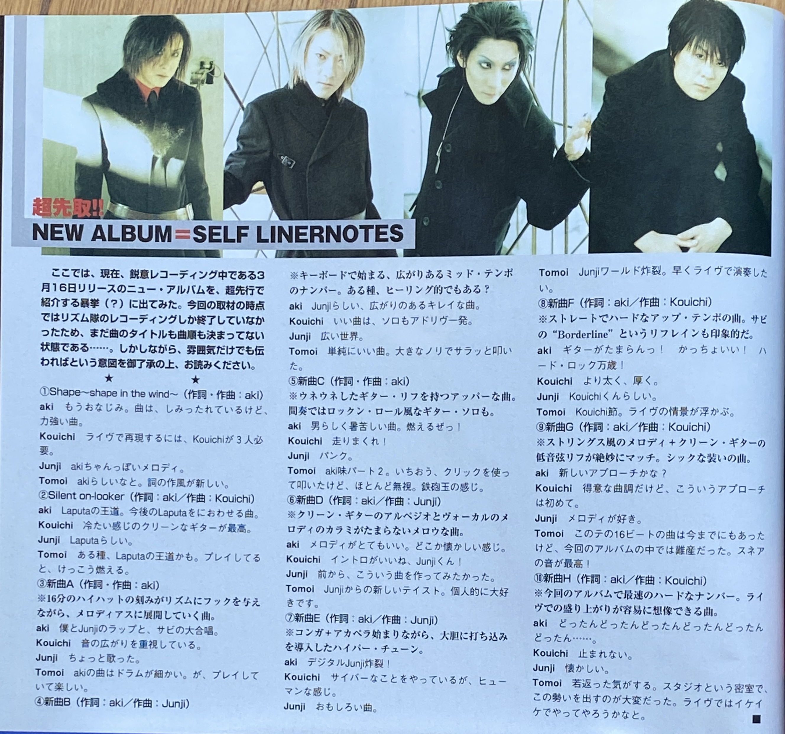

バンド用語がわからない管理人が、メンバーの解説から曲目を当ててみる。
2026.11.24
2001年2月の『エムガゼット』Vol.36に掲載された、Laputaのアルバム『楽～ヘブン～園』のメンバーによる楽曲解説。2001年3月16日に発売されるニューアルバムを、発売前にメンバー自身が紹介するという企画です。
ただし、取材時点ではまだレコーディングの途中。曲名も曲順も決まっていなかったため、楽曲は「新曲A」「新曲B」といった仮の名前で紹介されています。
記事には作詞・作曲者のほか、akiさん、Kouichiさん、Junjiさん、Tomoiさんの4人が、それぞれの曲についてコメントしています。
『楽～ヘブン～園』は、Laputaが東芝EMIから日本クラウンへレコード会社を移籍してから初めてリリースしたアルバムです。このアルバムには、ライブでファンと一緒に楽しむことを意識した楽曲が盛り込まれているように感じます。一方で、東芝EMI時代の作品と比較すると、音楽的にも新しいアプローチが見られるように思います。
レコード会社の移籍という環境の変化に加え、Junjiさんを除くメンバーが30代に差しかかった時期でもあります。年齢を重ねたことによる心境や、音楽への向き合い方の変化もあったのでしょうか。これは、資料から確認できる事実ではなく、私個人の仮説です。
さて、私は音楽をよく聴いていますが、演奏技術や専門用語については、ほとんど知識がありません。クラシックピアノを幼少期に少しだけ習っていたので、音符や楽譜の基本は分かりますが、ギターやドラムの演奏技法となると話は別。リフって何ですか？ ハイハットって何ですか？ という感じです。
一般的な曲作りやレコーディングの過程もよく分かりません。耳も音痴で、ピアノをやっていた割に音感もそれほどなく、ギターなのかベースなのか分からない時もあります（笑）。廃人の諸先輩の皆様は、なぜそんなに詳しいのでしょう。私は曲全体を聴く「聴く専」です。
それでも、メンバーのコメントを手掛かりに、実際のアルバムを聴きながら曲名を当ててみることにしました。音楽を聴く側の人間が、作る側の言葉をどこまで読み解けるのか。今回はそんな試みです。
今回の資料

記事の冒頭には、次のような説明があります。
「ここでは、現在、鋭意レコーディング中である3月16日リリースのニュー・アルバムを、超先行で紹介する暴挙（？）に出てみた。今回の取材の時点ではリズム隊のレコーディングしか終了していなかったため、まだ曲のタイトルも曲順も決まっていない状態である……。」
つまり、今回のコメントは完成した音源を聴いた感想ではなく、制作途中の楽曲についてメンバーが語ったものです。リズム隊とはドラムとベースのこと。そこまでの録音は終わっていたものの、曲名や曲順はまだ決まっていなかったようです。
完成版とは異なる部分もあるかもしれませんが、当時の制作現場を想像できる興味深い資料です。
まずはバンド用語を調べる
曲名を考える前に、説明に使われている用語を理解する必要がありました。今回、特に気になった言葉を整理してみます。
| 用語 | 意味 |
|---|---|
| リフ | 繰り返される特徴的な短いフレーズ。ギターリフは曲の印象を決めることが多い。 |
| クリーン・ギター | 強く歪ませていない、透明感のあるギターの音色。 |
| アルペジオ | 和音を構成する音を一つずつ弾く奏法。ピアノの分散和音に近い。 |
| クリック | 演奏者がテンポを確認するためのメトロノーム音。 |
| コンガ | 手で叩いて演奏する打楽器。 |
| 打ち込み | コンピューターなどで音やリズムをプログラムして鳴らすこと。 |
| スネア | ドラムセットにある太鼓の一つ。裏側の響き線による、独特の鋭い音が特徴。 |
| ストリングス風 | バイオリンなどの弦楽器を思わせる音色や旋律。 |
| メロウ | 柔らかく、落ち着いた情緒的な雰囲気。 |
用語を調べてみると、普段何気なく聴いている曲にも、いろいろな演奏技法や音作りが使われていることが分かります。特にギターの音色やリズムの特徴、打ち込みの有無などは、曲を特定する手掛かりになりそうです。まあ、耳は音痴ですけどね。
10曲の正体を推理する
『楽～ヘブン～園』は全11曲ですが、1曲目の「Blast-Off Time」は歌のないSEとして扱い、今回の推理対象からは除きます。そのため、対象は残り10曲です。
「Shape」と「Silent on-looker」は既発曲なので曲名が分かっていますが、新曲A～Hについては、メンバーのコメントを手掛かりに考えていきます。なお、雑誌では新曲A～Hの曲名は伏せられています。以下の曲名は、管理人みょんの推理です。
| 雑誌の表記 | 専門用語・手掛かり | 管理人みょん（私）の予想と曲の所感など |
|---|---|---|
| ① Shape～shape in the wind～（作詞・作曲：aki） | ライブでの再現が難しい、しみったれている、力強いメロディ | 既発曲。「Kouichiが3人必要というコメントが気になる」。耳が音痴すぎて、どうしてKouichiさんが3人必要なのかがわからないのが私的には非常に残念（笑）。最初のメロディーの弦楽器と、バイオリンと、ギターのせいですか？ 間奏のところは確かにギターの重なりがあるような？ 実際のライブでは残り二人のKouichiさんをどうしたのかなと思いました（多分打ち込みデータになっていると思うけど、そういうライブの見方は今までしていない）。注意深く聴くとJunjiさんのベースの音が聞き取れました。 30歳って最近だとまだ幼いのに、頑張ろうとするLaputaたちだなと思う曲です。そうです、羽は飛べれば何色でもいいのです。 |
| ② Silent on-looker（作詞：aki／作曲：Kouichi） | クリーン・ギター、冷たい感じ、Laputaの王道 | 既発曲。Kouichiさんのギターがかっこいい（いつもかっこいいけど）。Tomoiさんが燃えてくるっていうのもなんとなくわかる気がしました。on-lookerって傍観者って意味なんですね。 |
| ③ 新曲A（作詞・作曲：aki） | 16分ハイハット、ラップ、大合唱、音の広がり。 | Devil's Waiting と予想。細かいリズムと歌の構成、サビの合唱っていうのが特徴的なのはこれですね。Tomoiさんがakiさんの曲は細かいが演奏していて楽しいっていうのは、私はプロ意識っていうのももちろんですが、メンバー同士の信頼関係のような感じを感じました。Junjiさんのラップが聞ける曲って他にもありましたかね？ 管理人は本業の廃人の他、会社員を副業（？）でしていますので、歌詞にある内容は、なんとなく同意できるというか。akiさん、私も日々そう感じています。と思いました。 |
| ④ 新曲B（作詞：aki／作曲：Junji） | キーボード、ミッド・テンポ、広がり | Sapless Heart と予想。出だしのキーボードの音は、ジーザス007号（「Programized Heaven」の歌詞参照）から届いた通信音だと私は思っていますが（笑）。ヒーリング的という説明から、穏やかでスケールのある曲はこれですね。アンコールでLaputaが出てきましたよという情景が浮かびました。 |
| ⑤ 新曲C（作詞・作曲：aki） | ウネウネしたギターリフ、アップテンポ、ロックンロール風ソロ | Black Sheep と予想。男らしく暑苦しいというakiさんの表現が印象的で、私はそこに燃え（萌え？）ます。ウネウネのギターリフってなんだって思ったんですが、ああ、こういうことねっていうのが少しわかった曲。akiさんってこういうパンクっぽい曲も書けるんだとびっくりした曲でした（でも今はakiさんらしいと思う）。 |
| ⑥ 新曲D（作詞：aki／作曲：Junji） | クリーン・ギター、アルペジオ、メロウ | I Cry "Dance" と予想。イントロのアルペジオでわかった感じです。改めて聴いてみて、え、これJunjiさん作曲だったの？って今頃になって驚きました。 そして、Laputaと過ごす（＝楽曲を聴く）時間に溺れて埋もれて私は、予想以上に惹かれていました、という私のことですか？ という歌詞でした。 |
| ⑦ 新曲E（作詞：aki／作曲：Junji） | コンガ、アカペラ、打ち込み、サイバーなこと、ヒューマンな感じ | Programized Heaven と予想。最初の太鼓（コンガ）の音と、Y2Kの近未来的なサイバーな感じのLaputaの曲といえばこれでしょう。私はこの曲のakiさんのニュース速報のアナウンスが好きで、N⚫︎KのAIによる自動音声ニュースをakiさんの声に変えて欲しいくらいです。アナウンスがうま過ぎて、プロのアナウンサーに頼んだのかと思い、akiさんご本人のお声だということに最初は気づかなかったです。私、この楽曲の歌詞の内容は、すでに25年前に出たというのに（今2026年）、現在の世の中の状況を表しているように感じます。もしこの世がなくなるとしてもLaputaを聴いて見つめていたい。そう思う曲ですね。 |
| ⑧ 新曲F（作詞：aki／作曲：Kouichi） | ハード、アップテンポ、ギター、Borderline | Borderline と書いてある（笑）。Kouichiさん作曲でakiさんがギターを絶賛していますが、私も特にギターがノリノリで大好きな曲で、かっこいいと思う。これはボーカルだったら歌っていて楽しい曲だと思います。本物のライブでLaputaと一緒に歌いたいです。今はライブ動画を見ながら一緒に歌って一人で爆発しています。 |
| ⑨ 新曲G（作詞：aki／作曲：Kouichi） | ストリングス風、クリーン・ギター、低音弦リフ、16ビート、スネア | Dazzling Sun と予想。最初がストリングス風っていうのと、Kouichiさんの得意な曲調ってのもヒントになりました。この低音でメロディの動いているのがベースじゃなくてギターなのですね。歌詞も、白く光る希望のLaputaの楽曲が私にそっと触れると優しさで包まれます。 |
| ⑩ 新曲H（作詞：aki／作曲：Kouichi） | アルバム最速、ハードなナンバー、どったんどったん（笑） | Blindman's Buff と予想。疾走感のある曲は、これかなと予想。そもそもBlindman's Buffってなんだ？ と思い調べました。目隠しをした鬼が音や感触を頼りに他の参加者を捕まえる伝統的な鬼ごっこのことなんですね。歌詞を見て納得しました。お勉強になりました。 |
アルバム1曲目のSE「Blast-Off Time」も無茶苦茶かっこいいので、解説が欲しかったです。ほかの雑誌記事も探してみようと思います。ライブが始まるよ！という感じがしてワクワクしますね。途中の掛け声はJunjiさんでしょうか。ご本人にお尋ねしたいです。
メンバーのコメントから見えてくるもの
曲名を推理するためにコメントを整理していると、もう一つ面白いことに気づきました。4人とも同じ曲について話しているのに、注目している部分が少しずつ違います。
ここからは、今回の雑誌記事に掲載されたコメントを材料に、メンバーそれぞれの音楽的な視点を考えてみます。
akiさん：曲全体の印象とメロディ
akiさんのコメントは、曲全体から受ける印象や、メロディについて語っているものが多いように感じます。「男らしく暑苦しい曲」「燃えるぜっ！」「ギターがたまらんっ！」など、技術的な説明というより、聴いたときに感じるエネルギーをそのまま言葉にしている印象です。また、「メロディがとてもいい」「どこか懐かしい感じ」など、旋律に対する評価もあります。私のような音楽初心者にも分かりやすい表現です。
Kouichiさん：ギターとサウンドの構築
Kouichiさんのコメントは、ギターや音の作り方に関するものが目立ちます。「クリーンなギターが最高」「音の広がりを重視」「より太く、厚く」など、音色やサウンドの質感に注目しています。また、ギターソロやイントロについてのコメントもあり、楽曲の中でギターがどう機能するかを意識しているように見えます。
特に新曲Fでは、akiさんがギターを絶賛している一方、Kouichiさん自身は「より太く、厚く」と表現しています。先生のおっしゃるギターの太さや厚みを理解するには、私にはまだまだ時間がかかりそうです。ギターを弾く本人と、それを聴くボーカリストでは、同じ音に対しても注目するところが違うのかもしれません。
Junjiさん：メロディと曲の雰囲気
Junjiさんのコメントは、比較的短く、感覚的な表現が多い印象です。「広い世界」「パンク」「メロディが好き」など、曲の持つ雰囲気や方向性を端的に表現しています。特に自分が作曲した新曲Dでは「前から、こういう曲を作ってみたかった」と語っています。
技術的な説明よりも、曲が持つ世界観や、自分が作りたかった音楽についての言葉が印象に残ります。このころからJunjiさんの作曲数も増えていました。Junjiさんの曲もいいですね。
Tomoiさん：リズムと演奏の感覚
Tomoiさんのコメントは、ほかのメンバーと比べて演奏する側の視点が強いように感じます。「ドラムが細かい」「クリックを使って叩いたけど、ほとんど無視」「スネアの音が最高」など、リズムや演奏時の感覚について具体的に語っています。また、「ライブで演奏したい」「ライブではイケイケでやってやろうかな」など、実際に演奏する場面を意識したコメントもあります。
ドラマーとして、曲を聴くだけでなく、どのように叩くか、どんな感覚で演奏するかという視点から楽曲を捉えているようです。
私が持っているTomoiさんの性格の印象は、ご自身のお仕事を着実にしっかりこなされる、冷静で現実的なイメージです。それだけに「クリック無視の鉄砲玉」とか「イケイケ」という言葉から、内面に秘めた熱いものを感じました。ドラムやバンドが大好きなんですね（そりゃそうだ）。
※以上は今回の雑誌記事に掲載されたコメントから読み取れる傾向と、私個人の印象です。メンバーそれぞれの制作上の役割や、活動全体を通した特徴を断定するものではありません。
まとめ：演奏する側から見たLaputa
それぞれのコメントを読みながら楽曲を聴き、歌詞を読み込んでみると、4人が一つの楽曲を作り上げていく過程が少しだけ見えてくるような気がします。
普段は完成した音源を聴いているだけですが、こうした制作途中のコメントを読むと、曲の聴き方も変わってきます。
演奏する側の言葉を私が理解するには、まだまだ勉強が必要そうです。どうしてもakiさんのメロディーに耳が持っていかれがちですが、次に聴くときは、それぞれのメンバーの楽器の演奏にも、もう少し注意深く耳を傾けてみようと思います。
出典：『エムガゼット』Vol.36、2001年2月号。Laputa『楽～ヘブン～園』発売前のメンバーによる楽曲解説。
Last Update : 2026.11.24